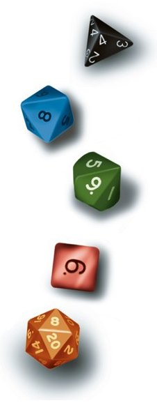

Rétro
Tapouweb est né en août 2000. À cette époque je voulais faire découvrir AD&D à des amis, mais nos occupations respectives ne nous permettaient pas de passer des heures de préséances pour que je leur explique ce qu'était le jeu de rôle en général, et Dungeons & Dragons en particulier. Découvrant internet à la maison à cette même époque, l'idée m'est alors venue de mettre sur le web les grandes lignes du jeu (les races et les classes) dans un coin de mon site perso du moment, afin que chacun puisse, durant un moment de libre, y jeter un œil et se faire une idée du personnage qu'il voudrait jouer. Puis, un peu plus tard, j'ai même ajouté une description de Laelith, le monde dans lequel les aventures allaient se dérouler. Finalement nous n'avons jamais joué ensemble, faire coïncider les emplois du temps de chacun se révélant impossible.
Cependant, à ma grande surprise, j'ai commencé à recevoir des emails de compliments pour ces quelques pages. Des gens qui tombaient dessus par hasard et qui trouvaient l'approche intéressante. J'ai alors par la suite supprimé les autres parties de mon site (photos de vacances et petites applications Visual Basic à télécharger) pour ne continuer à développer que celles sur AD&D, en rajoutant petit à petit des infos sur les règles et sur Laelith. Les emails me posant des questions (principalement sur la cité sainte) se multipliant, j'ai ajouté par la suite un forum que j'avais développé moi-même. Mais les visiteurs, de plus en plus nombreux chaque semaine, ont vite montré les limites de mon petit forum maison et je suis alors passé à phpBB, suivant les conseils de plusieurs membres de l'époque. En 2003 j'ai découvert, tardivement car près de trois ans après sa sortie, la troisième édition de D&D. J'ai alors migré toutes mes aides de jeu d'AD&D vers D&D 3, et des personnes se sont proposées pour diffuser sur mon site leurs créations.
Puis l'envie de jouer m'est revenue mais, ne vivant plus en France, je n'avais autour de moi aucun joueur. J'ai alors regardé sur internet ce qu'il était possible de faire, sans rien trouver qui me satisfasse. Les forums de jeu que je visitais ne proposaient que des parties de pur RP, où chacun passait d'un lieu à un autre suivant son envie, sans trame, sans MD. Moi je voulais jouer comme autour d'une table, mais avec un océan entre les joueurs. J'ai alors commencé à développer de petits bouts de code pour customiser le forum phpBB afin de rendre possible les parties en ligne comme je voulais les jouer, avec un MD et des joueurs qui suivent un scénario classique.
13 ans plus tard, le site avait bien évolué. On y parlait de la quatrième édition de D&D et de Pathfinder ; Laelith n'était plus le seul monde présenté, Golarion y était également développé ; et plus de 100 parties différentes tournaient constamment sur le forum qui comptait plus de 20 000 inscrits. Tapouweb était devenu une grosse machine et je n'étais plus le seul à la faire fonctionner ; une équipe de plusieurs personnes m'aidaient dans cette tâche.
Puis vient le 19 octobre 2013. Une nouvelle histoire commença...
blueace, 01/08/2020
Souvenirs des temps passés, spécial 20 ans... et plus

2003

2006

2009

2012

2015

2018

2021